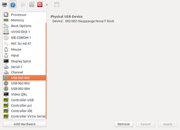

Server Ash
Ash is my main home server .
Ash
Ash is my main home server . It hosts a few virtual machines (including this website), it also a good point to document the configuration somewhere; as the source of this website is on git hub this also makes a nice config back-up.
Named after Ash Ketchum
mythtv.lan
This a visualised instance of mythUbuntu. This is my forth upgrade to my home mythtv server. The screenshots for mythweb give an idea of greatness of mythtv
Available at http://myth.barwap.com/mythweb but you need a user name and password unlike your standard magazine the newsagents for TV.
This is my first mythtv running in a virtual machine - the trick is to pass the USB, only later versions of Ubuntu (14.04.04 or +), keep the same bus and device after warm boots of the USB controller.
<hostdev mode='subsystem' type='usb' managed='yes'>
<source>
<address bus='2' device='2'/>
</source>
<alias name='hostdev0'/>
</hostdev>
scrambled.lan
This the workhorse of the server in terms fo the outside world. It runs Pound, the Pound program is a reverse proxy, load balancer and HTTPS front-end for Web servers.
The detailed config is stored https://github.com/bmsleight/teletubbies-pound. To help get let's encrypt I used a few google searches and this post Let's Encrypt Certificates and Pound Load Balancer
The config file for pound, redirects anything to the https except for /.well-known/acme-challenge/ - ironically used for let's encrypt.
ShaunTheSheep
This is a simple server to share files on the lan. Folder with are on Samba shares, to move around between users and machines.
{kind=link}
barwap.lan
This site, static hosted from nginx, Lektor target of target = rsync://bms@barwap.lan/home/bms/www.barwap.com/html/
{kind=link}
vic.lan
A virtual machine running Lubuntu, (Ubuntu that is lighter, less resource hungry and more energy-efficient by using lightweight applications and LXDE,), with has calibre in the background so I get my daily paper to my kindle. Also it is nice to have another desktop handy.
determine.lan
Hosting of determine.org.uk, more information detailed under https://www.barwap.com/professional-work/#determine
owncloud.lan
Running an instance of https://owncloud.org/ -so we can share files externally with ease. .